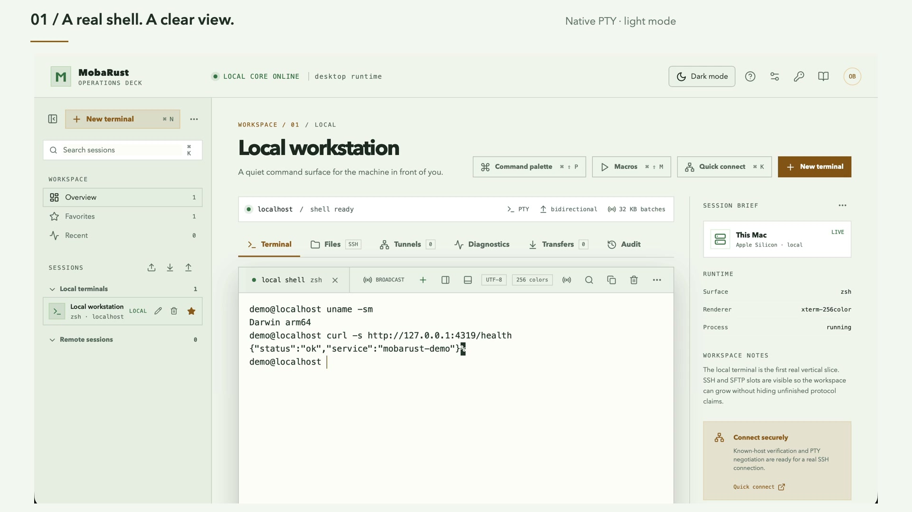

Connect with context.
Save SSH profiles, organize them with folders and tags, and verify the host key before the first session.
Free & open source · Built with Rust
Free, open-source MobaXterm alternative built with Rust. SSH, files, local terminals and tunnels—side by side.

01 / The working loop
A remote tool should keep the surrounding work close: the host, its files, the tunnel you opened, and the command you are about to run.
Save SSH profiles, organize them with folders and tags, and verify the host key before the first session.
Browse and move files over SFTP, run a local terminal, open a tunnel, or inspect a host without losing your place.
Preview snippets, confirm multiline pastes, select broadcast targets explicitly, and stop cancellable work when you need to.
02 / See the application
Follow the 94-second walkthrough: native terminals, real SSH, SFTP editing and download, a working tunnel, snippets, and themes. The capture uses local fixtures, not a production host.
Recorded in MobaRust 0.1.17 on macOS. Silent video with chapter titles. Actual SSH, files and HTTP traffic use disposable loopback fixtures; local account labels and paths are obscured.
03 / Made for the workday
Host-key checks, multiple auth paths, saved profiles, jump hosts, reconnect state, and a native terminal that stays with the session.
SFTP and SCP with streaming progress, cancellation, overwrite decisions, recursive transfers, and remote text editing with conflict checks.
Tunnels, SOCKS5, snippets, cancellable macros, network diagnostics, and visible multi-exec targets.
Native local shells, split panes, persistent tabs, typed shell targets, and WSL foundations.
Legacy Telnet is clearly labeled unencrypted. Serial adds explicit device settings, refresh, and recoverable disconnect handling.
RDP and VNC are experimental. RDP is excluded from installers; VNC remote TCP is unencrypted and opt-in.
04 / Trust is part of the interface
MobaRust is local-first. Rust owns the sensitive work; the interface gets typed capabilities instead of an unrestricted system bridge.
Read the threat modelHost keys stay explicit. Unknown SSH hosts are not silently trusted.
Saved secrets stay in the vault. Profiles keep credential references. Interactive SSH answers belong to one challenge.
Actions stay visible. Multiline paste, snippets, and multi-exec have deliberate controls.
Checks stay local. Tests use isolated state and loopback fixtures, not personal keys or real hosts.
05 / Try the preview
Free, open source, and ready to install. Preview builds lack publisher signing and still need full clean-install and interoperability evidence.
MAC PREVIEW · V0.1.26
Mac downloads are v0.1.26; Windows and Linux remain v0.1.12. These previews lack publisher signing. Checksums confirm integrity, not identity. macOS may require per-app first-launch approval.